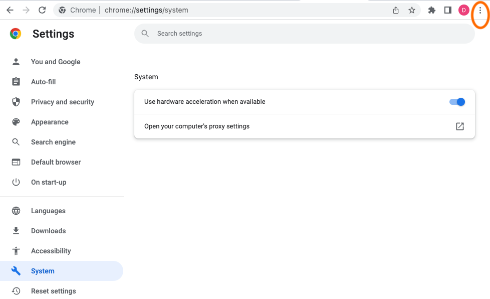

Burpと連携するようChromeを設定する - Windows
ChromeでBurpを使用する場合は、プロキシ設定を行う必要があります:
-
Chromeを開き、カスタマイズ (ハンバーガー) メニューに移動します。
-
設定を選択し、システムメニューを開きます。
-
パソコンのプロキシ設定を開くをクリックします。プロキシ設定ウィンドウで、プロキシサーバの設定を行えます。

-
設定を自動的に検出するやセットアップスクリプトを使うがオフになっていることを確認します。
-
プロキシサーバーを使うをオンに設定します。
-
アドレス欄に、Burp Proxyのリスナーアドレス(デフォルトは
127.0.0.1)を入力します。
-
ポート欄に、Burp Proxyリスナーのポート番号(デフォルトは
8080)を入力します。
-
ローカル(イントラネット)のアドレスにはプロキシサーバーを使わないのチェックが外れていることを確認します。
-
保存をクリックします。